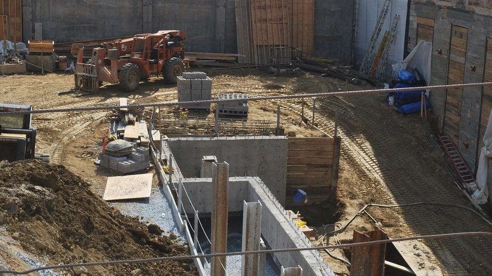
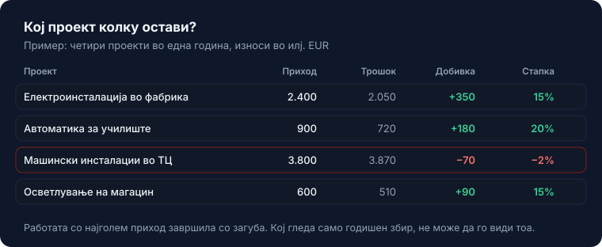
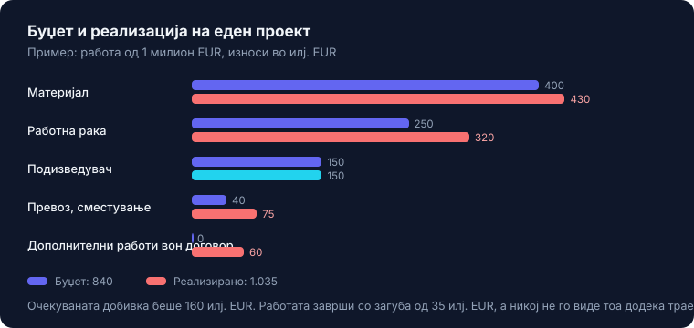

Како се мери профитабилноста на проект? Да се види додека работата трае, не кога ќе заврши
Кај фирмите што работат по проект добивката најчесто се дознава еднаш годишно. Сметководителот ја изготвува завршната сметка и се гледа колку фирмата заработила таа година. Кој проект заработил, а кој бил во загуба — тоа во тој извештај не се гледа. Во овој текст објаснуваме зошто профитабилноста на проект не може да се измери и што треба да се запишува за да се мери.

Што крие вкупната добивка?
Ако фирмата на крајот на годината е во добивка, сите здивнуваат. Но во тој збир работите што добро заработиле и оние што биле во загуба можеби се поништиле меѓусебно. Во примерот подолу фирмата ја затвора годината со добивка, но најголемиот проект ѝ е во загуба.

Фирма што не ја гледа оваа табела, следната година ќе даде понуда за иста таква голема работа по иста цена. Да растете без да знаете кој тип работа, кој клиент и кој тим носи пари значи да ја растете и работата што носи загуба.
Зошто трошокот не се книжи на проектот?
Кај повеќето фирми трошоците се евидентираат; недостига на кој проект припаѓаат. Сметката за гориво влегува во сметководството како „трошок за возила“. Фактурата од хотелот близу градилиштето станува „сместување“. Кабелот купен од трговецот на големо се книжи како „материјал“. Сè е на точното конто, но се изгубило за која работа е потрошено.
Кај работната рака е потешко. Еден тим во текот на неделата работи на две градилишта, а платата му се исплаќа на крајот на месецот како една ставка. Одговорот на прашањето кој на кој проект работел колку дена е во евиденцијата на присуство — ако воопшто ја има.
Има и дополнителни работи што не се фактурираат. Клиентот на терен вели „да повлечеме еден вод и таму“ и тимот го прави тоа. Таа работа ја нема во договорот, никој не јавува во канцеларијата, материјалот и работната рака влегуваат во трошокот на проектот, а фактура никогаш не се издава.
Што треба да се запишува за да се мери?
За да се види профитабилноста на проект не треба сложена пресметка. Доволно е редовно да се водат четири работи.
Буџет на почетокот на проектот
Кога ја подготвувате понудата, веќе правите пресметка на трошоците. Зачувајте ја ставка по ставка: материјал, работна рака, подизведувачи, превоз и сместување. За да знаете со што ќе споредувате кога работата ќе заврши.
Шифра на проект на секој трошок
Нарачка за набавка, сметка за трошок, фактура од подизведувач — што и да е, при внесот се избира на кој проект припаѓа. Кога ова едно поле е задолжително, половина работа е решена.
Кој, на кој проект, колку часа
Едноставна дневна или неделна евиденција на работата. Шефот на тимот навечер на телефон означува кој на кое градилиште бил тој ден. Не треба прецизност во минута; за повеќето фирми е доволен податок на ниво на половина ден.
Посебна евиденција на дополнителните работи
Секое барање вон договорот, пред да се изведе, се пријавува во канцеларијата со краток запис и го одобрува клиентот. Така и се фактурира и не го расипува основниот буџет на проектот.

Да се гледа додека работата трае
Пресметката на профитабилноста по завршувањето е корисна за следната понуда. Вистинската корист е да се гледа додека работата трае. Ако се потрошени осумдесет проценти од буџетот за работна рака, а половина работа уште стои, голема е разликата дали го знаете тоа во третата недела или го дознавате по предавањето.
Кога ќе видите рано, имате избор. Можете да го смените тимот, да разговарате со клиентот за цената на дополнителните работи, да преминете на алтернативен материјал. Кога работата ќе заврши, единственото што останува е да ја прифатите загубата.
За тоа е доволен еден екран што се гледа еднаш неделно: за секој проект буџетот, потрошеното досега и процентот на завршеност.
Не можеме ли ова да го правиме во Excel?
За еден проект може, и има фирми што го прават. Тешкотијата е во собирањето на податоците. Набавката е на едно место, сметките за трошоци на друго, присуството во тетратка, фактурите во сметководствената програма. Некој мора секоја недела сè рачно да пренесува во една табела. Обично се откажуваат во вториот месец.
Придонесот на софтверот тука не е во пресметувањето, туку во фаќањето на податокот на изворот. Проектот се избира кога се внесува нарачката за набавка, кога се фотографира сметката со телефон, кога се внесуваат работните часови. За извештајот не се троши дополнителен труд; записите сами се собираат под проектот.
Алатките што го прават ова се различни: ERP системи со модул за проекти, специјализирани програми за проектно сметководство, решенија развиени по мерка за фирмата. Изборот зависи од тоа каде сега се водат набавката и сметководството. Ние претпочитаме да надградиме без да го нарушиме постојниот ред.
Често поставувани прашања
Како да ги распределиме општите трошоци на проектите?
На почеток не ги распределувајте. Прво книжете ги директните трошоци (материјал, работна рака, подизведувачи, превоз) на проектот. Кирија, канцелариски персонал и слично можат подоцна да се додадат со едноставен процент. Кај повеќето фирми сликата се менува и само со директните трошоци.
Зар тоа веќе не го прави нашиот сметководител?
Сметководителот ги води законските книги и го прави она што е исправно од даночен аспект. Профитабилноста по проект не е законска обврска, па не е дел од неговата работа. Тоа е евиденција што фирмата ја води за сопствено управување.
Што ако тимот се противи на внесување часови?
Не барајте секој да внесува поединечно. Доволно е шефот на тимот еднаш дневно да означи кој на која работа бил — тоа се прифаќа многу полесно.
Поврзани услуги: ERP за инженерски и изведувачки фирми, ERP решенија за мали и средни фирми.
Пресметајте ја реалната добивка од една работа
Внесете го износот на понудата и трошоците; видете ги една до друга привидната добивка и реалната добивка со часовите на тимот.
Отвори го калкулаторотКоја ваша работа заработува?
Да ги извадиме заедно буџетот и реализацијата на еден ваш проект.
Да разговараме за вашиот проект